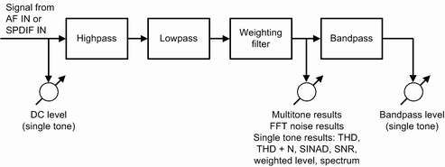

AF Filter Settings
The AF input path of the audio measurements provides the following configurable filter stages which affect the AF results:
- Lowpass filter with a cutoff frequency of 3 kHz, 4 kHz or 15 kHz
- Highpass filter with a cutoff frequency of 6 Hz, 50 Hz or 300 Hz
You can use this filter stage to eliminate a possible DC component in the audio signal. - Weighting filter
The human ear is a nonlinear sensor. Its sensitivity depends on the frequency. Weighting filters de-emphasize low and high frequency components to which the human ear is less sensitive.Several weighting filters with different shape have been standardized. The following filters are supported:– A-weighting filter defined in IEC 61672. The A-weighted scale is commonly used in local ordinances and standards. – CCITT weighting filter defined in ITU-T Rec. O.41 (also known as ITU-T P53 filter). This filter is used for international telephone circuits. – C-message weighting filter defined in IEEE 743. This filter is used for North American telephone circuits. - Bandpass filter with configurable center frequency and bandwidth. This filter cannot be disabled and is only relevant for the single tone measurement result "Bandpass Level".
The following figure provides an overview of the filter positions in the input path and of the measurement points for the individual results. The lowpass, highpass and weighting filter can be disabled separately.

Input path filters and results